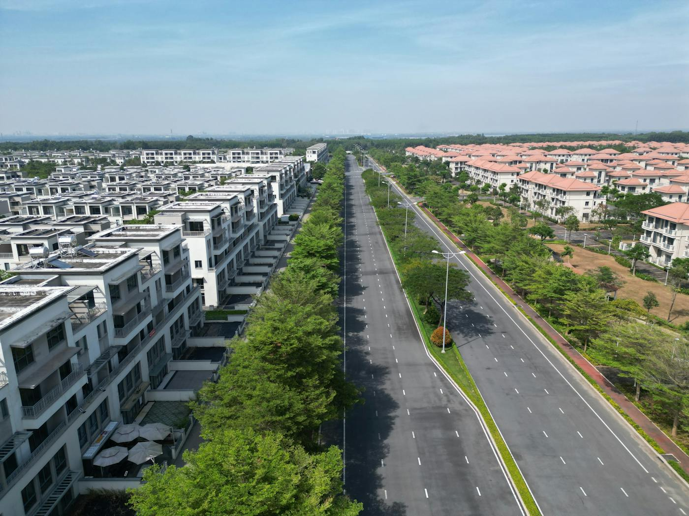
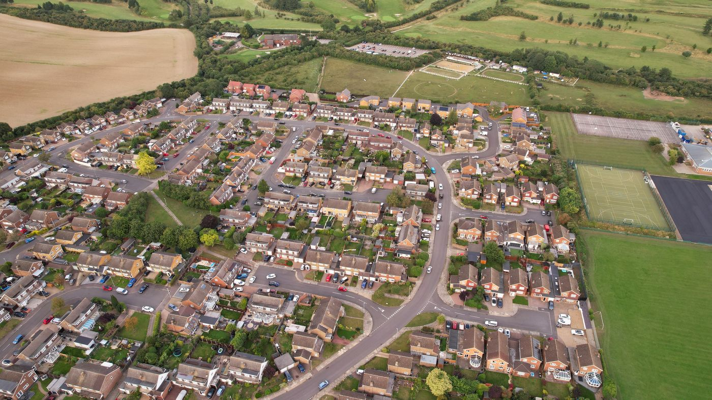

Quick answer: Luxury custom homes in Newcastle NSW cost $3,000–$6,000 per m² in 2026 depending on specification, site complexity, and whether coastal marine-grade specs apply. This is meaningfully lower than equivalent Sydney builds ($4,500–$7,000+/m²), reflecting lower land and labour costs in the Hunter market. Newcastle City Council DA timelines run 2–4 months for standard residential applications, 4–9 months for heritage-affected sites in Cooks Hill, Hamilton, and parts of Merewether. The highest-value residential suburbs are Merewether, Bar Beach, Cooks Hill, and Hamilton. Volume builders dominate the Newcastle market at entry specification; boutique custom builders are the right tool for complex sites, architectural ambition, and premium finishes.
Newcastle’s residential property market has had an interesting decade. The city that Sydney homeowners once described as “a good drive from Newcastle” has become, by most measures, a genuine alternative for those who want more land, ocean access, and a city of actual scale — without paying Mosman prices for it.
The luxury end of Newcastle’s custom home market has grown accordingly. This guide covers what premium builds actually cost in 2026, which suburbs attract the serious investment, how the approval process works in Newcastle’s specific regulatory context, and the situations where a boutique custom builder is the right choice for a Hunter Valley project.
- Newcastle’s luxury residential market in 2026
- What luxury builds cost in Newcastle
- The key Newcastle suburbs for premium builds
- Newcastle City Council DA process
- Coastal site requirements
- Heritage in Newcastle’s inner suburbs
- Volume builder vs boutique custom
- When a Sydney boutique builder makes sense
- When not to use a luxury builder
- FAQ
Newcastle’s Luxury Residential Market in 2026
Newcastle is no longer a secondary market for luxury residential construction. The combination of genuine ocean-facing positions in Merewether and Bar Beach, character inner-suburb stock in Cooks Hill and Hamilton, and larger lots in the Heights suburbs has created a residential market that supports builds competitive with much of metropolitan Sydney in specification — at a cost structure that is 20–35% more favourable.
Land values in Merewether have tracked upward since 2020. Elevated lots in Adamstown Heights and New Lambton Heights with district views have attracted buyers who want space and outlook without the inner-ring premium. Lake Macquarie waterfront — Warners Bay, Elemore Vale, Redhead — has seen renewed interest from buyers who want the visual quality of a harbour position at a fraction of the price.
The builder market in Newcastle reflects this growth: volume builders remain the dominant offer at entry and mid-tier, but a growing cohort of boutique custom builders with genuine architectural capability has emerged to serve clients whose briefs cannot be met from a catalogue. Understanding where the volume builder’s product ends and the custom builder’s capability begins is the most useful distinction for any Newcastle homeowner planning a significant project.
What Luxury Builds Cost in Newcastle in 2026

Photo via Pexels
| Specification | Newcastle (per m²) | Sydney equivalent (per m²) |
|---|---|---|
| Volume / project builder | $1,800 – $2,400 | $2,200 – $2,800 |
| Mid-tier custom | $2,600 – $3,800 | $3,200 – $4,500 |
| Luxury custom | $3,800 – $5,500 | $4,500 – $7,000 |
| Premium architectural | $5,500 – $8,000+ | $7,000 – $12,000+ |
A 350m² luxury custom home in Newcastle at mid-tier specification costs $910,000–$1.33M in construction. At luxury specification, the same floor area runs $1.33M–$1.93M. These are construction-only figures before land, design, council contributions, and landscaping.
The cost difference between Newcastle and Sydney narrows significantly for coastal sites. Marine-grade specifications — required within approximately 1km of the ocean — add 8–15% to total construction cost regardless of location. A Merewether luxury build and a Northern Beaches Sydney luxury build face similar coastal specification requirements, making the per-square-metre gap between the two markets smaller than the inland comparison suggests.
All-in project cost for a luxury knockdown-rebuild in Newcastle — demolition, design, DA, construction, landscaping, and council contributions — typically runs $1.5M–$3.2M, with the upper end representing coastal Merewether and Bar Beach sites with premium specification. For comparison, equivalent projects in comparable Sydney LGAs (Northern Beaches, Lower North Shore) land at $2.5M–$5.5M+. The gap is real and significant.
The Key Newcastle Suburbs for Premium Builds

Photo via Pexels
Merewether and Bar Beach
The highest-value positions in the Newcastle market. Ocean-facing, walkable to Merewether Beach and Bar Beach, and commanding some of the strongest residential land values in the Hunter region. New builds here command premium resale. The trade-offs: coastal specifications are mandatory, heritage overlays affect parts of the area, and lot sizes are smaller than the Heights suburbs. A luxury new build in Merewether is a statement of location as much as specification.
Cooks Hill and Hamilton
Inner-suburb character with walkability, proximity to the Newcastle CBD, and a residential market that values renovation of existing Federation and Californian bungalow stock as much as new build. Heritage conservation areas cover significant parts of both suburbs. New builds and major renovations require careful design response to heritage controls. The buyer profile is similar to inner-west Sydney: professionals, downsizers, and design-conscious families who want urban amenity over lot size.
Adamstown Heights and New Lambton Heights
Elevated positions with district views over Newcastle and Lake Macquarie. Larger lots (600m²–1,000m²+) suited to double-storey custom builds with outdoor entertaining, pools, and genuine landscape scope. Less constrained by heritage controls than the inner suburbs. The value proposition: more floor space, more land, and better views at significantly lower land cost than Merewether.
Warners Bay and Redhead
Lake Macquarie waterfront positions that have attracted increasing investment from buyers seeking the visual quality of a waterfront outlook without the ocean-facing premium. Custom builds in these areas are growing in specification and ambition, supported by the Lake Macquarie LGA’s more straightforward planning environment relative to Newcastle City Council’s heritage-intensive inner suburbs.
Newcastle City Council DA Process
Newcastle City Council (NCC) administers development applications for the Newcastle LGA. For standard residential new builds and extensions on unaffected sites, the Council processes DAs in approximately 2–4 months. This is comparable to most Western Sydney LGAs and significantly faster than heritage-intensive North Shore councils.
The approval path depends on the site:
- CDC (complying development): Available on eligible lots not in heritage conservation areas or coastal zones. Private certifier assessment in approximately 20 business days. The fastest path for standard builds on compliant lots.
- Standard residential DA: 2–4 months for straightforward applications. Council pre-DA meetings are available and recommended for any site with complexity — heritage overlay, coastal zone, constrained access, or unusual lot configuration.
- Heritage DA: Required for sites within Newcastle’s heritage conservation areas (Cooks Hill, Hamilton, and parts of Merewether and Newcastle). Timeline: 4–9 months. A Statement of Heritage Impact is required. Heritage DAs benefit significantly from early engagement with Council’s heritage planner before formal lodgement.
Section 7.11 infrastructure contributions apply per new dwelling under Newcastle City Council’s contributions plan. Confirm the applicable rate for your proposed development before the feasibility analysis, not during construction. Check your specific lot on the NSW Planning Portal and Newcastle City Council’s interactive mapping tools before briefing a designer.
Coastal Site Requirements
Newcastle’s coastal position is its greatest residential asset and its most material construction constraint. Within approximately 1km of the ocean — which covers Merewether, Bar Beach, Newcastle Beach, Nobbys, and immediately adjacent streets — Australian Standards require marine-grade construction specifications that add cost and complexity to any build.
The key coastal requirements:
- Structural steel: Hot-dipped galvanised or stainless steel for all exposed structural elements. Standard powder-coated mild steel is not adequate in Newcastle’s salt-air environment.
- Window and door frames: Commercial-grade aluminium or timber. Powder-coated aluminium frames used on standard Sydney builds are not rated for salt-air coastal exposure. This is the most commonly underspecified element in coastal builds.
- Fixings and fasteners: Marine-grade stainless steel throughout, including roofing fixings, structural bolts, and balustrade hardware.
- Roofing: Colorbond steel or similar corrosion-resistant material. Zincalume and standard Colorbond are rated for coastal use; standard painted steel is not adequate within 500m of the ocean.
- Concrete: Higher concrete grade (typically N32–N40 with increased cover to reinforcement) for slabs and footings exposed to saline groundwater or salt-air.
These specifications add approximately 8–15% to total construction cost on a coastal Newcastle build. A builder who is not experienced with coastal construction in Newcastle specifically will underspecify these requirements — producing a home that presents well at handover and deteriorates measurably within 5–8 years. Ask for examples of completed coastal builds and verify the builder’s familiarity with marine-grade specification before engaging them for a Merewether or Bar Beach project. For comparison with how coastal requirements are handled in Sydney’s Eastern Suburbs, see our post on custom architectural builders in the Eastern Suburbs.
Heritage in Newcastle’s Inner Suburbs
Newcastle has significant heritage conservation areas in its most desirable inner suburbs. Cooks Hill, Hamilton, and parts of Merewether contain substantial concentrations of heritage-listed dwellings and conservation area streetscapes that affect what is permissible on any given lot — even if the specific building on the lot is not individually listed.
For custom builds and major renovations in these areas, the key implications are:
- Demolition of an existing dwelling may not be approved without demonstrated justification, even for a non-listed building in a conservation area.
- New builds in conservation areas must demonstrate compatibility with the existing streetscape character in bulk, scale, setbacks, and material palette.
- Alterations to heritage-listed buildings require a specialist heritage architect and a Statement of Heritage Impact as part of the DA.
- DA is mandatory — CDC is not available for sites within heritage conservation areas regardless of whether the design meets the numerical standards.
Builders who operate extensively in Sydney’s heritage-intensive councils (Woollahra, Ku-ring-gai, Mosman) bring directly transferable experience to Newcastle’s heritage approval process. The regulatory framework is similar; the specific heritage character guidelines differ by precinct.
Volume Builder vs Boutique Custom for Newcastle Luxury
Newcastle’s builder market is dominated by volume builders at mid and entry tier. This is not a criticism — on standard flat lots with standard briefs, a quality volume builder delivers a fast, cost-effective product. The limitation becomes clear when the brief cannot be delivered from a catalogue: complex sites (sloped, coastal, heritage-affected), architectural ambition that requires bespoke structural elements, or finishes specification that a volume builder’s standard inclusions cannot match.
| Factor | Volume builder | Boutique custom builder |
|---|---|---|
| Standard flat lot | Strong | Strong (but higher cost) |
| Sloped or complex site | Limited | Strong |
| Coastal specification | Variable — check carefully | Strong if experienced |
| Heritage DA | Not suited | Strong if heritage track record exists |
| Architectural design freedom | Catalogue-constrained | Full design flexibility |
| Approval management | Standard CDC only | CDC and DA |
| Cost (per m²) | Lower | Higher |
| Timeline | Faster on standard builds | Longer but more predictable on complex builds |
The decision is not volume vs boutique based on prestige. It is volume vs boutique based on whether your site and brief fall within or outside what a volume builder’s standard product can deliver. For guidance on the selection criteria that apply regardless of location, see our guide on how to choose a custom home builder.
When a Sydney Boutique Builder Makes Sense for Newcastle
A Sydney boutique builder working in Newcastle is not automatically a better or worse choice than a quality local Newcastle custom builder. The relevant question is capability match to the specific project.
A Sydney boutique builder may be the right choice for Newcastle when: the site is coastal with complex marine-grade specification requirements and the local builder market lacks experience with that level of specification; the design involves structural complexity (large cantilevers, architectural concrete, complex facade systems) where the local trade network has limited exposure; or the heritage approval process requires engagement with NSW heritage regulations at a level that local builders rarely encounter.
The practical trade-offs of engaging a Sydney builder for Newcastle: site supervision logistics require either a resident site manager or frequent travel, which adds cost and complexity; the local trade network may not be as deep, requiring subcontractors to travel from Sydney for specialist trades; and any site management gaps that would be quickly resolved on a Sydney project may take longer in Newcastle. These are manageable, not disqualifying, when the capability case is strong.
For straightforward luxury builds on standard Newcastle lots with moderate design complexity — the majority of premium custom builds in the Hunter — a quality local Newcastle boutique builder with a verified portfolio and strong trade relationships is the simpler and often equivalent choice. For builds that require distinctive capability, geography is a secondary consideration to competence.
When Not to Use a Luxury Builder for Your Newcastle Project
This is the section most guides skip. We are not most guides.
Do not use a luxury custom builder if your brief is a well-specified home from a standard catalogue on a flat, unaffected lot. A quality volume builder delivers this product faster and at lower cost. The overhead structure of a boutique builder — design involvement, project management, bespoke procurement — is only justified when the project cannot be delivered from a catalogue. If your brief can be met by what a volume builder offers, the boutique premium is not earning its cost.
Do not use a luxury builder if your total budget is under $800,000 including land. At this level in the Newcastle market, the budget does not support the full boutique process. A quality volume builder or mid-tier custom builder with a strong local reputation is the appropriate choice.
Do not engage any builder before checking whether a double storey design maximises your lot’s FSR. Newcastle’s R2 zones typically apply a 0.5:1 FSR. On a 600m² lot, that is 300m² of floor space. On a single storey, that footprint consumes most of the lot. On a double storey, 150m² per level preserves the outdoor areas that define a luxury residential experience. See our guide on double storey home builders in Sydney for the cost and planning analysis that applies equally to Newcastle.
Do not build without running a basic feasibility comparison with a knockdown rebuild. In Merewether, Bar Beach, and Cooks Hill, existing homes often sit on blocks with strong land value. If the existing dwelling is pre-1990 with asbestos, substandard services, or a floor plan that cannot deliver the brief, the comparison between renovation and new build deserves serious analysis before either path is committed. The numbers are sometimes closer than they initially appear.
FAQ
How much does a luxury custom home cost to build in Newcastle NSW in 2026?
Luxury custom construction in Newcastle runs $3,800–$5,500 per m² for high-specification custom builds at premium specification, and $5,500–$8,000+ per m² for premium architectural builds with complex structural elements, bespoke joinery, and imported finishes. A 350m² luxury home at the lower end of that range costs $1.33M–$1.93M in construction before land, design, approvals, and landscaping. These figures are 20–30% below equivalent Sydney specifications in comparable LGAs.
Which Newcastle suburbs attract the highest-value luxury homes?
Merewether and Bar Beach hold the highest residential land values in the Newcastle market, driven by ocean-facing positions and walk-to-beach amenity. Cooks Hill and Hamilton attract design-conscious buyers who prioritise inner-suburb character and walkability. Adamstown Heights and New Lambton Heights offer larger lots with district views. Warners Bay and Redhead on Lake Macquarie attract buyers seeking waterfront amenity at significantly lower cost than ocean-facing positions.
How long does a DA take with Newcastle City Council?
Standard residential DAs on unaffected sites process in 2–4 months. Heritage DAs in Cooks Hill, Hamilton, and parts of Merewether take 4–9 months depending on complexity. Complying Development Certificates (CDC) remain available for compliant designs on eligible lots in approximately 20 business days. A pre-DA meeting with Council is recommended for any complex or heritage-affected application.
Do I need special specifications for a coastal Newcastle property?
Yes. Within approximately 1km of the ocean, marine-grade specifications are required: hot-dipped galvanised or stainless structural steel, commercial-grade aluminium window frames, marine-rated fixings, and corrosion-resistant roofing. These add 8–15% to total construction cost. A builder without specific coastal experience in Newcastle will routinely underspecify these requirements — ask for completed coastal builds in the local area before engaging.
Is it worth using a Sydney boutique builder for a Newcastle luxury home?
On complex sites — coastal, heritage, architecturally ambitious — a Sydney boutique builder with the specific capability may produce a better outcome than local volume alternatives. The trade-offs are site supervision logistics and local trade relationships. For standard luxury builds on unaffected Newcastle lots, a quality local custom builder with a verified portfolio is the simpler and generally equivalent choice.
When should I not use a luxury builder for my Newcastle project?
When your brief can be met by a volume catalogue; when your total budget is under $800,000 including land; when you have not yet run a feasibility comparison between new build and renovation (particularly relevant for pre-1990 Merewether and inner-suburb stock); or when a double-storey design has not been evaluated against your FSR limit and lot size.